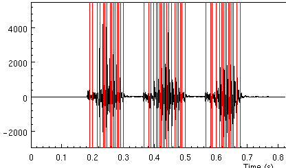
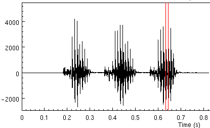
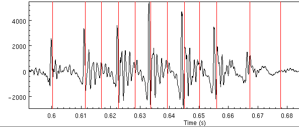
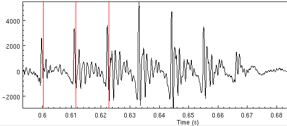
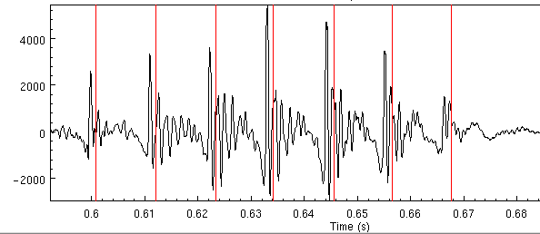

| Building Synthetic Voices | ||
|---|---|---|
| <<< Previous | Basic Requirements | Next >>> |
Although never as good as extracting pitchmarks from an EGG signal, we have had a fair amount of success in extracting pitchmarks from the raw waveform. This area is somewhat a research area but in this section we'll give some general pointers about how to get pitchmarks form waveforms, or if not at least be able to tell if you are getting reasonable pitchmarks from waveforms or not.
The basic program which we use for the extraction is pitchmark which is part of the Speech Tools distribution. We include the script bin/make_pm_wave (which is copied by ldom and diphone setup process). The key line in the script is
This program filters in incoming waveform (with a low and a high band filter, then uses autocorellation to find the pitch mark peaks with the min and max specified. Finally it fills in the unvoiced section with the default pitchmarks.$ESTDIR/bin/pitchmark tmp$$.wav -o pm/$fname.pm -otype est \
-min 0.005 -max 0.012 -fill -def 0.01 -wave_end \
-lx_lf 200 -lx_lo 51 -lx_hf 80 -lx_ho 51 -med_o 0
For debugging purposes you should remove the -fill option so you can see where it is finding pitchmarks. Next you should modify the min and max values to fit the range of your speaker. The defaults here (0.005 and 0.012) are for a male speaker in about the range 200 to 80 Hz. For a female you probably want values about 0.0033 and 0.7 (300Mhz to 140Hz).
Modify the script to your approximate needs, and run it on a single file, then run the script that translates the pitchmark file into a labeled file suitable for emulabel
You can the display the pitchmark withbin/make_pm_wave wav/awb_0001.wav
bin/make_pm_pmlab pm/awb_0001.pm
This should should a number of pitchmarks over the voiced sections of speech. If there are none, or very few it definitely means the parameters are wrong. For example the above parameters on this fileemulabel etc/emu_pm awb_0001
taataataa properly find pitchmarks in the three vowel
sections

Pitchmarks in waveform signal
-lx_lf 200 -lx_hf 80
are in appropriate for the speakers pitch range you may get either
too many, or two few pitch marks. For example if we change the
200 to 60, we find only two pitch marks in the third vowel.

Bad pitchmarks in waveform signal

Close-up of pitchmarks in waveform signal
We get the following$ESTDIR/bin/pitchmark tmp$$.wav -o pm/$fname.pm -otype est \
-min 0.007 -max 0.012 -fill -def 0.01 -wave_end \
-lx_lf 150 -lx_lo 51 -lx_hf 80 -lx_ho 51 -med_o 0

Close-up of pitchmarks in waveform signal (2)
-lx_lo parameter
often helps
We get the following$ESTDIR/bin/pitchmark tmp$$.wav -o pm/$fname.pm -otype est \
-min 0.005 -max 0.012 -fill -def 0.01 -wave_end \
-lx_lf 150 -lx_lo 91 -lx_hf 80 -lx_ho 51 -med_o 0

Close-up of pitchmarks in waveform signal (3)
If you feel brave (or are desperate) you can actually edit the pitchmarks yourself with emulabel. We have done this occasionally especially when we find persistent synthesis errors (spikes etc). You can convert a pm_lab file back into its pitchmark format with
bin/make_pm_pmlab pm_lab/*.lab
An post-processing step is provided that moves the predicted pitchmarks to the nearest waveform peak. We find this useful for both EGG extracted pitchmarks and waveform extracted ones. A simple script is provided for this
bin/make_pm_fix pm/*.pm
If you pitchmarks are aligning to the largest troughs rather than peaks
your signal is upside down (or you are erroneously using -inv.
If you are using -inv, don't, if you are not, then invert
the signal itself with
for i in wav/*.wav
do
ch_wave -scale -1.0 $i -o $i
done
Note the above are quick heuristic hacks we have used when trying to get pitchmarks out of wave signals. These require more work to offer a more reliable solution, which we know exists. Extracting (fixed frame) LPC coefficients and extracting a residual, then extracting pitchmarks could give a more reliable solution but although all these tools are available we have not experimented with that yet.
| <<< Previous | Home | Next >>> |
| Recording under Unix | Up | Limited domain synthesis |